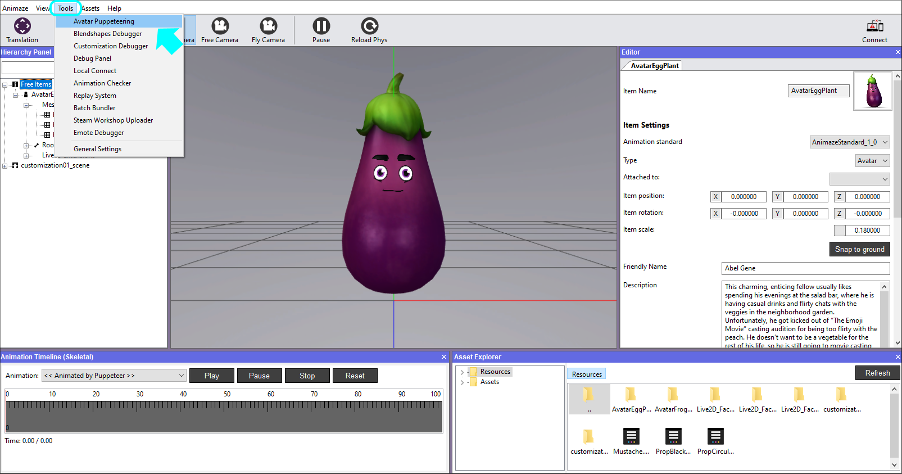
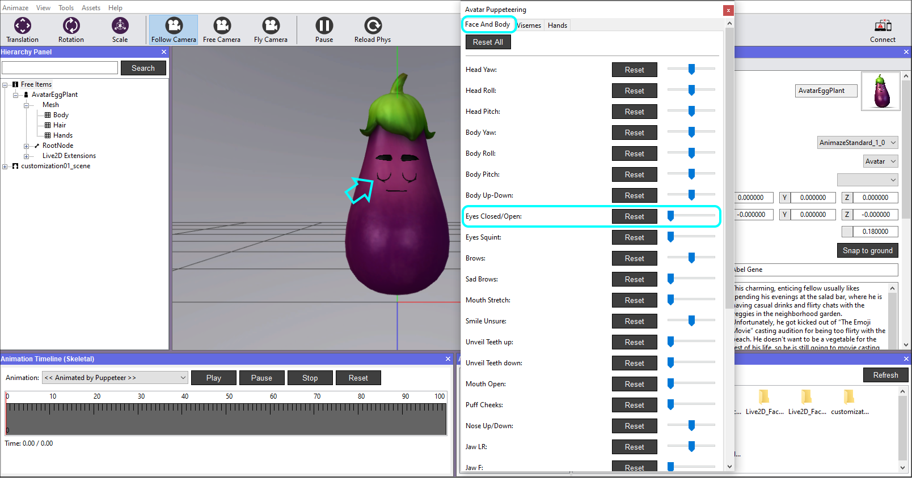
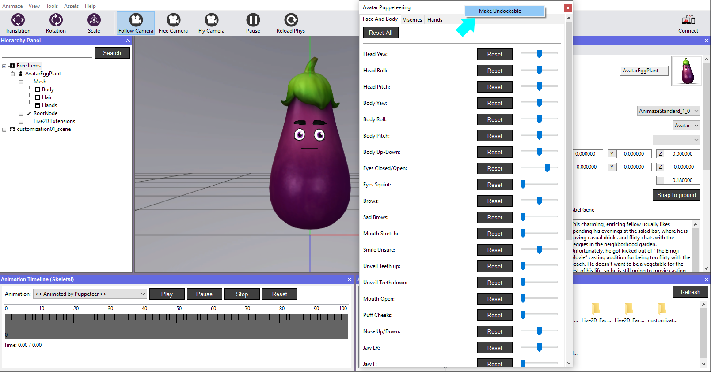
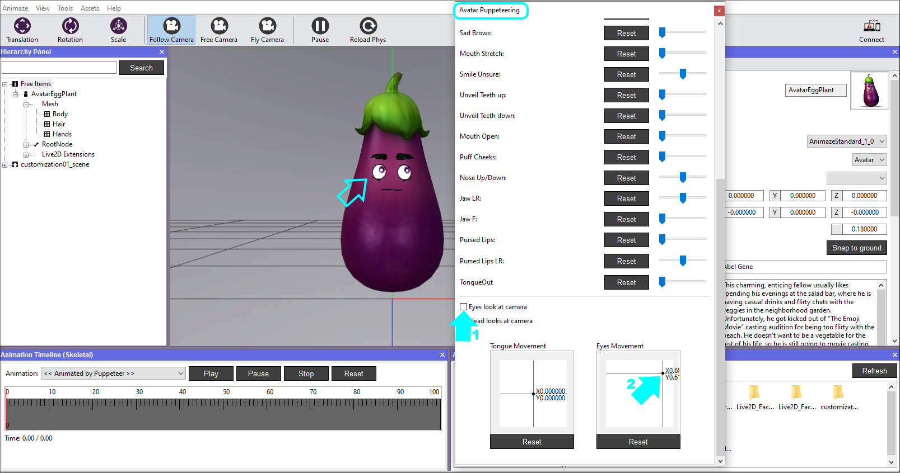
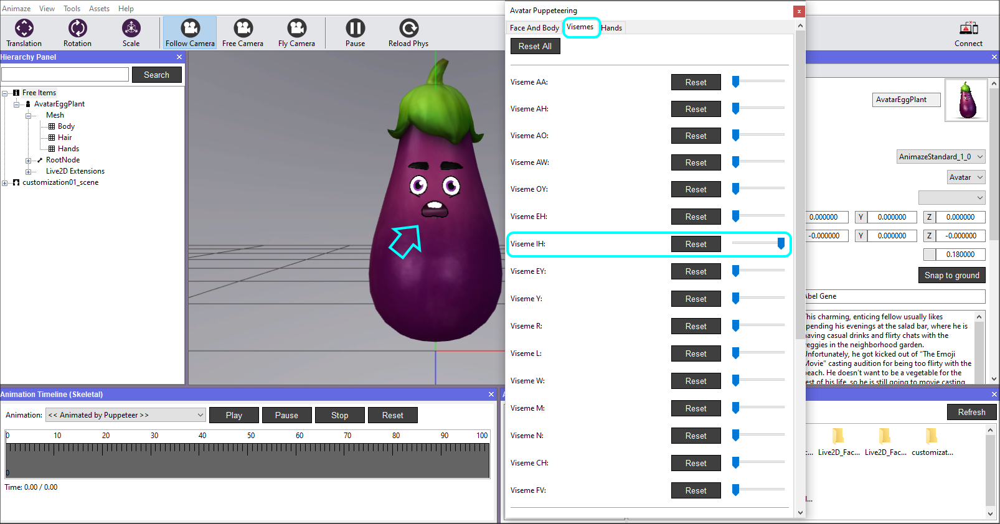
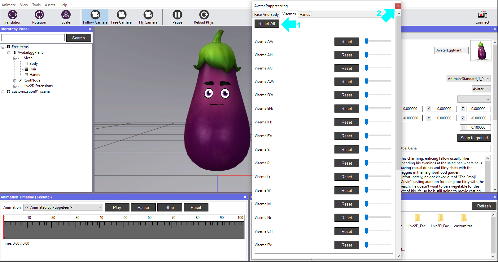

Use Avatar Puppeteering - Expressions debugging
The Avatar Puppeteering is an animation debugging tool that enables triggering the model's animation inputs without the need of the tracking capabilities that Animaze apps provide. It's role is to trigger common scenarios for face and body movements (e.g. smiles, frowns, look-at etc.).
The tool has two tabs: one for Face And Body and one for Visemes. Here is how to use it:
-
Open Animaze Editor and navigate to Tools, then select Avatar Puppeteering.

-
Avatar Puppeteering opens as a floating window, which you can integrate as a panel next to the other panels, or simply keep it afloat and place it anywhere you
want on your screen by right-clicking on it and selecting Make Undockable. We chose the latter, for this example.

-
Drag the sliders to debug the expression and head animations of the avatar. Note that not all the sliders will affect it, it is relative to how the avatar was built. Clicking the Reset button will return the avatar to its default/neutral state.

Toggle everything you want to debug while here.
-
Now let’s test the eyes' motion accuracy. Scroll down the Avatar Puppeteering window and untick the Eyes look at camera option, then click & drag the point of color in the Eyes Movement Box; zoom in to notice the eyes’ changed position.

Clicking the Reset button will return the avatar to its default/neutral state.
-
In the Visemes tab of the Avatar Puppeteering window you can debug the visemes of the avatar using the same method. Click and drag the sliders and watch the avatar’s mouth shape changing.

-
When you are done with debugging everything, close the window from the upper right corner.

This is all. :)